Celebrating Our 2026 Awardees
Join us in honoring these exceptional leaders and partners at our 5th Anniversary Soirée on November 12, 2026.
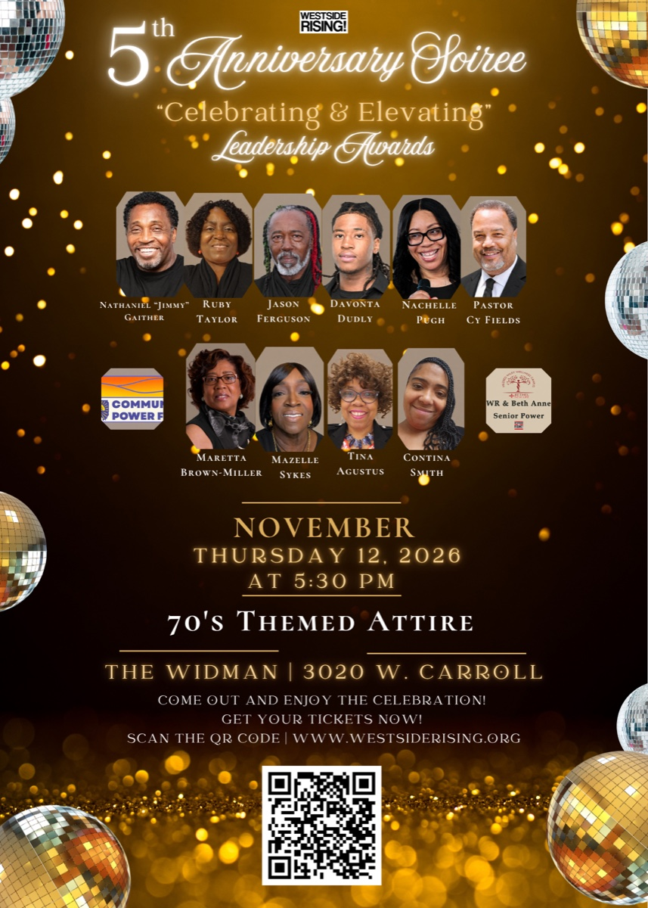
Rising Star Award
Recognizing emerging leaders who show exceptional promise and dedication to community service

Contina “Tina” Smith
Rising Star AwardContina “Tina” Smith is a lifelong contributor to Chicago’s West Side whose work connects family, food, entrepreneurship, and service. The daughter of former Alderman Wallace Davis Jr., she served as Head Chef and Manager of his legendary Wallace’s Catfish Corner from 1993 to 2015, helping sustain a beloved neighborhood gathering place. In 2024, she carried that legacy forward by establishing T&L Grocery & Restaurant. Through her business, Tina creates local jobs, provides food and clothing to neighbors in need, and offers encouragement and accountability. Her decades of service reflect a family tradition of feeding people, creating opportunities, and strengthening community.
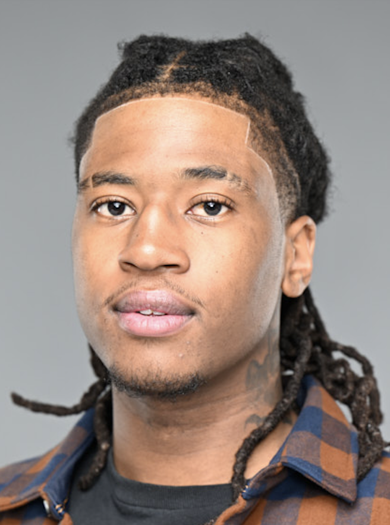
Davonte Dudley
Rising Star AwardDavonte Dudley is Executive Director in training at Root2fruit Youth Foundation, where his journey began at age 12 as a youth participant. A Chicago Park District employee and community advocate, he co-created the youth-led Austin Safety Action Plan in 2021 to activate safe spaces and empower young people. He led the Pushin’ Peace Campaign in 2022 and 2023, encouraging students to find or create safe summer activities. In February 2025, My Brother’s Keeper and the Obama Foundation honored him as a change agent for Black and Brown boys in Chicago. Davonte remains committed to expanding opportunities for the next generation.
Exceptional Leadership Award
Honoring leaders who demonstrate outstanding vision, innovation, and impact in community development
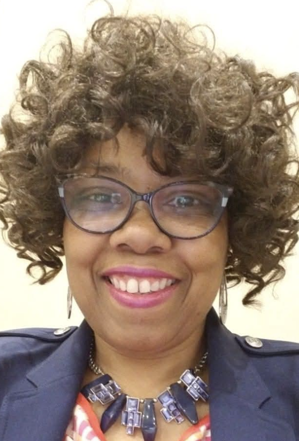
Tina Augustus
Exceptional Leadership AwardTina Augustus is President of Elevate Services Marketing and Communications and author of “God’s Holy Spirit: Maturing Believers for the Building of His Kingdom.” An Illinois State Black Chamber of Commerce board member, she helped secure $1.5 million for Columbus Park improvements. She leads the South 29th Ward Participatory Budget Team, guiding Austin residents in allocating $1 million. A former Austin Chamber of Commerce executive director, Tina founded the Austin Adams Block Club Association and serves as Austin Green Team vice president. She contributes to the Austin Quality of Life Plan and holds a B.A. in English Literature from Roosevelt University.
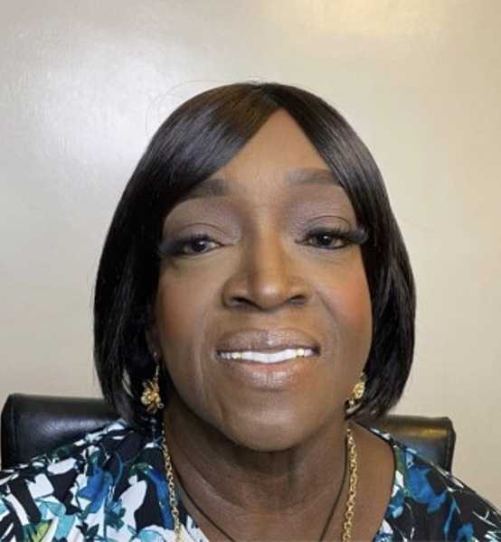
Mazell Sykes
Exceptional Leadership AwardMazell Sykes is a community advocate dedicated to restorative justice, healing, and connection. After 24 years at Loyola, she retired in 2014 and went on to work with the Restorative Justice Community Courts under Chief Judge Timothy Evans. A licensed peace circle keeper and trauma specialist, she has served as a restorative justice coordinator and community liaison. Through Community Renewal Society, she met Rev. Ciera Bates-Chamberlain, who later hired her as Site Coordinator for the Landmark Community Healing Resource Center. Mazell values her partnership with Westside Rising and admires Dr. Orr’s commitment to supporting young people and strengthening the community.
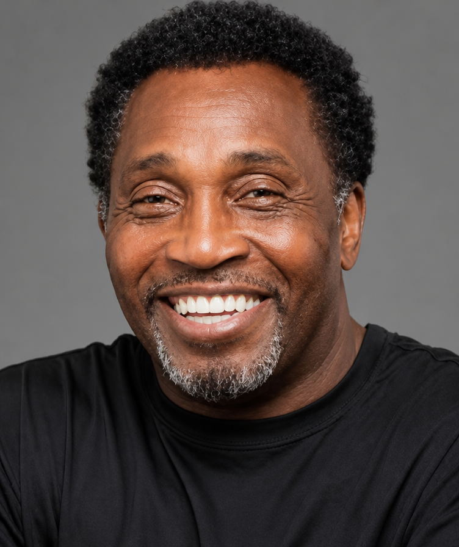
Pastor Nathaniel “Jimmy” Gaither
Exceptional Leadership AwardNathaniel “Jimmy” Gaither is Director of Community Relationship & Engagement, working on policy at Lawndale Christian Legal Center. A lifelong North Lawndale resident, he brings experience serving nonprofit organizations, Cook County government, and his community. Before joining LCLC, he served as a company liaison for Superior Ambulance. Jimmy advocates for criminal justice reform, restoration, and economic development for underfunded and underserved communities. As a speaker and coach, he supports individuals struggling with substance abuse. He strengthens relationships among residents, organizations, and stakeholders, driven by a belief in change and a commitment to ensuring community members have a voice.
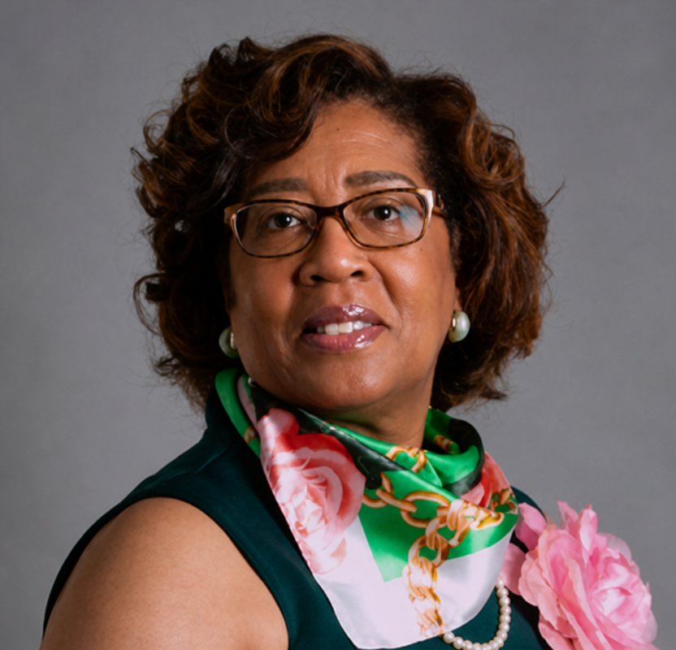
Maretta Brown-Miller
Exceptional Leadership AwardMaretta Brown-Miller has been an Austin stakeholder since 1982, serving organizations and community groups across Chicago. A Chicago Park District employee and active member of Friendship Missionary Baptist Church, she champions equity and equality for Austin residents. Maretta chairs the Austin Community Action Council and the 15th District Youth Committee, coordinates the 1400 & 1500 N. Long Block Club, and serves in leadership with Westside Stakeholders. She works with the 11th, 15th, and 25th Police Districts and partners with numerous community organizations. A blessed mother of three and grandmother of four, Maretta brings dedication and compassion wherever she is called to serve.
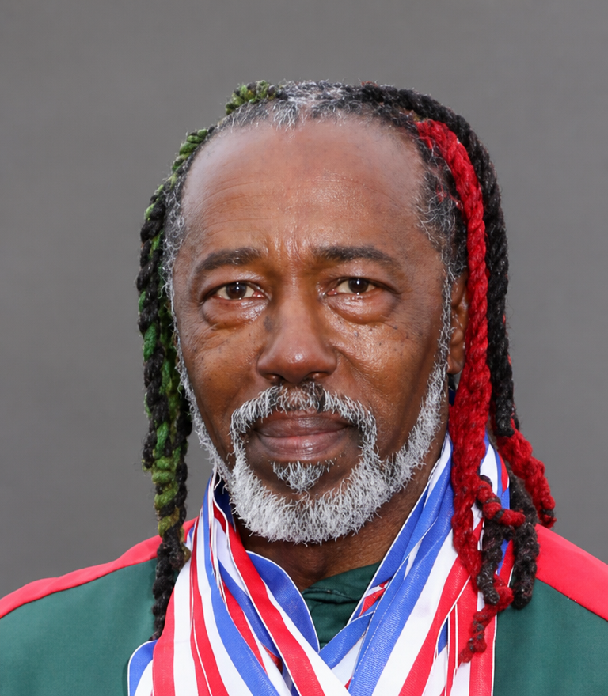
Jason Saudraniyo Ferguson
Exceptional Leadership AwardJason Saudraniyo Ferguson is an aspiring Black historian, poet, track coach, Marine Corps veteran, and 55-time Senior Olympic medalist from 2023 to 2026. Raised on Chicago’s West Side, he competed at John Marshall High School and in the Marine Corps. A Northeastern Illinois University graduate, he founded GOlympians in 2011 to help young athletes pursue college scholarships. His annual Black History Celebration brings education and fundraising to the community. Through coaching and competition, Jason supports opportunities for youth and a better quality of life for seniors. He recently earned 14 medals and qualified for the 2027 National Senior Games.
Community Impact Award
Celebrating individuals whose work has created measurable, lasting positive change in our communities
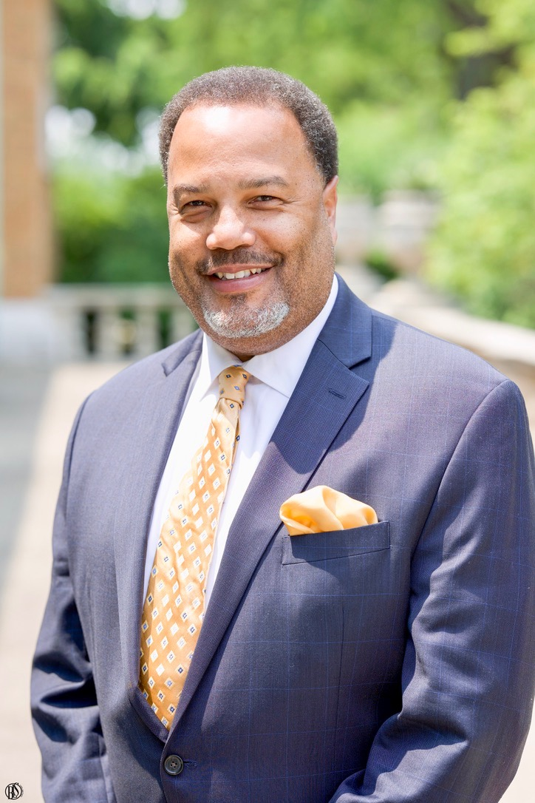
Pastor Cy M. Fields
Community Impact AwardPastor Cy M. Fields is a native Chicagoan with 39 years of ministry and public service, including 25 years as Senior Pastor of New Landmark Missionary Baptist Church in East Garfield Park. A visionary leader and community advocate, he champions social justice, violence prevention, affordable housing, and neighborhood revitalization. He serves as President and CEO of Landmark Community Development & Outreach Corporation and Co-Chair of the Leaders Network. His lifelong mission, “Helping People Win in Life,” reflects his unwavering commitment to strengthening communities and creating opportunities. He shares his life's greatest joys with his wife, Yolanda, and two daughters.
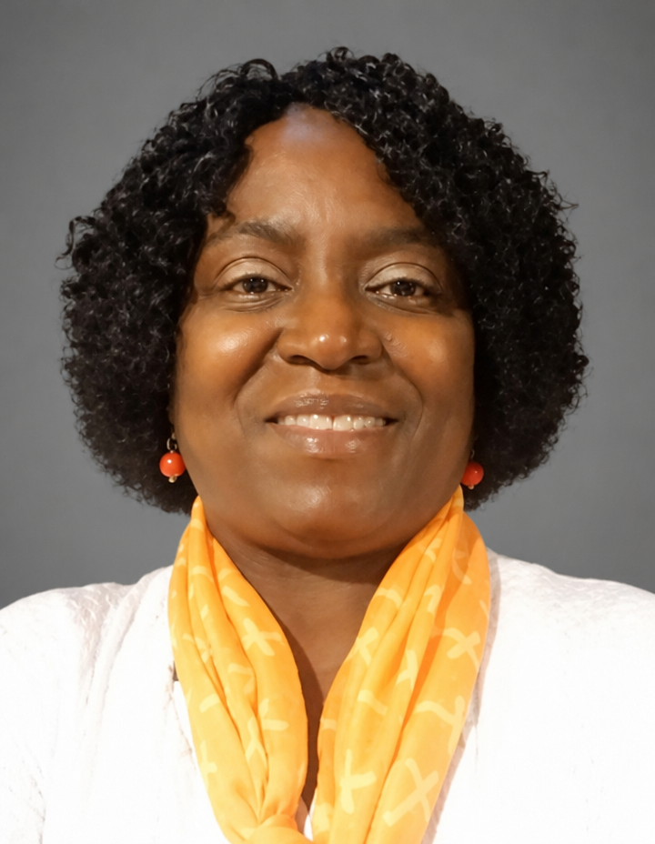
Ruby Taylor
Community Impact AwardRuby Taylor is a human services professional with over 44 years of experience and 26 years as Executive Director of Taproots, Inc. She holds a B.A. in Human Services from National Louis University and a Certificate in Nonprofit Management from UIC. A trained Restorative Justice Practitioner, her work spans child welfare, youth development, violence prevention, reproductive health, parenting education, and community engagement. Under her leadership, Taproots has served thousands through partnerships with schools, faith-based organizations, and public agencies. A lifelong resident of Chicago’s West Side, Ruby is a proud mother, grandmother, and great-grandmother committed to strengthening families and communities.
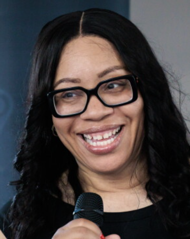
Nachelle Pugh
Community Impact AwardNachelle Pugh is a West Side Chicago native and Austin resident with 25 years of experience in higher education administration. She holds degrees in business and higher education administration from Robert Morris University. After losing her son, artist and Pivot Gang co-founder Walter “John Walt” Long Jr., in 2017, she co-founded the John Walt Foundation with his cousin, Saba. As Executive Director, Nachelle honors her son’s creative spirit by supporting under-resourced young creatives throughout Chicagoland. Through mentorship, fundraising, youth empowerment, and community building, she helps young people overcome challenges, pursue creative opportunities, and contribute to healthier, more connected communities.
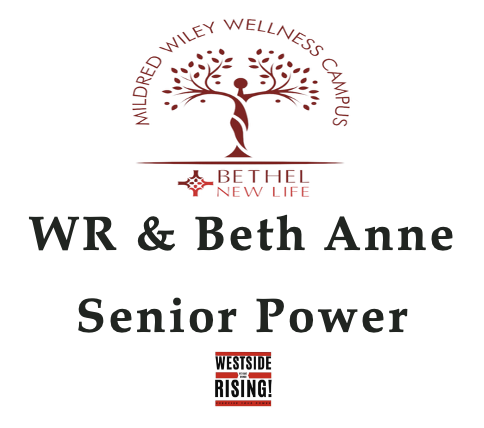
WR & Beth Anne Senior Power Group
Community Impact AwardThe WESTSIDE RISING Beth Anne Senior Power Group unites residents of Beth Anne senior living on the Bethel New Life campus near Division and Lamon. With Westside Rising’s support, seniors turned concerns about groceries, transportation, and daily services into collective action. Meeting nearly weekly, they developed strategies, engaged their alderperson, and secured meetings and commitments from public officials and the Greater Food Depository. Their organizing advanced plans for a larger, permanent food distribution site on campus, with seniors receiving training to help operate the pantry. Together, they demonstrate how resident leadership builds power, strengthens community, and shapes seniors’ everyday lives.
Supporting Partner Award
Recognizing partners whose support strengthens our work and our community
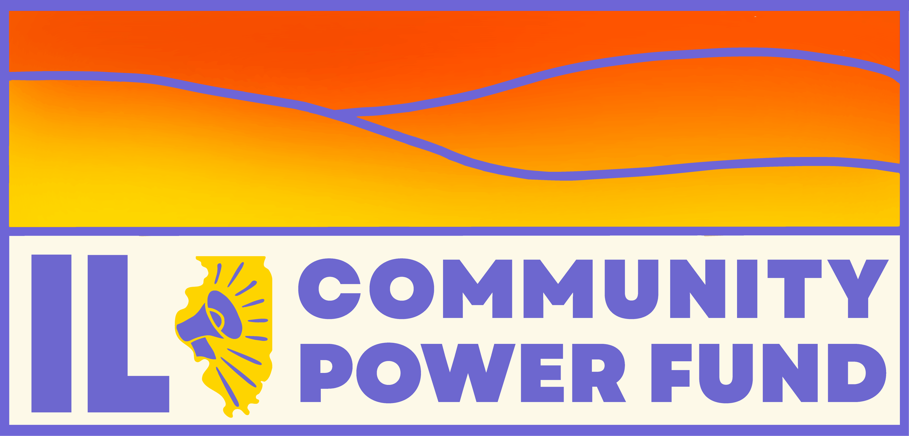
IL Community Power Fund
Supporting Partner AwardThe Illinois Community Power Fund is a philanthropic collaborative committed to resourcing statewide power that advances racial, gender, environmental, and economic justice. Through grantmaking, field building, and funder/donor organizing, we work to strengthen organizing groups to win an Illinois that works for everyone.
We strive for a powerful statewide organizing ecosystem rooted in communities excluded from formal power structures, connected enough to coordinate, and strong enough to shape the political and economic decisions that affect people's lives.
Rising Star Award
Recognizing emerging leaders who show exceptional promise and dedication to community service

Corey Dooley Johnson
Rising Star AwardCorey Dooley Johnson is an Entrepreneur who established CommunityCorey LLC in 2023. Corey served as Corridor Manager for Chicago Avenue's corridor revitalization project Soul City, generating multi-million dollar developments. Corey is a creative, authoring and publishing a book, Lil Shorty Love. Currently, he co-leads The Austin Experience, a Project Exploration initiative, in partnership with My Chi My Future. His vision is to create PRIME29 CHICAGO, a youth-led business organization whose focus is on developing the next generation of leaders in the 29th Ward - City of Chicago.

Kobey Lofton
Rising Star AwardKobey is a proud advocate for peace and nonviolence, hailing from the West Side of Chicago. With seven years of dedicated practice in nonviolent conflict resolution, he is a Nationally Certified Kingian Nonviolence Level 2 Trainer and Ambassador of Peace. In 2017, Kobey embarked on a journey across 27 states and over 150 cities, advocating and raising awareness for peace. During this journey, he spoke in Washington DC, New York, and other places akin to Chicago. His commitment to promoting empathy and resolving disputes peacefully has earned him recognition, including membership in the National Honors Society and the Phenomenal Man Award. Kobey is deeply passionate about empowering communities through youth engagement, education and advocacy for nonviolence.
Exceptional Leadership Award
Honoring leaders who demonstrate outstanding vision, innovation, and impact in community development

Crystal E. Gardner
Exceptional Leadership AwardCrystal E. Gardner, a Chicago Westside native and CPS alum, is a community organizer and activist dedicated to social justice and progressive organizing. With a background in public service, union organizing, and civic engagement, she has led impactful initiatives, including voter registration campaigns and community-focused programs. Currently serving as Deputy Political Director for SEIU Local 73, Crystal continues to empower working-class communities through advocacy, policy work, and grassroots organizing.

Johnnie Mae Mordican
Exceptional Leadership AwardJohnnie Mae Mordican is an exceptional community leader, deeply committed to outreach, youth advocacy, and fostering partnerships. A passionate advocate for community empowerment, she works closely with schools to support and inspire young people. Her dedication to building meaningful relationships and creating positive change has made her a trusted and impactful figure in her community.

Kenya Johnson-Brown
Exceptional Leadership AwardKenya Johnson-Brown is a dedicated community leader whose tireless work has made a lasting impact on the Greater West Side. Through her commitment to community development and advocacy, she has championed initiatives that strengthen neighborhoods and empower residents. Her visionary leadership and collaborative approach have inspired meaningful change and brought people together to build a more vibrant and resilient community.
Community Impact Award
Celebrating individuals whose work has created measurable, lasting positive change in our communities

Sharif Walker
Community Impact AwardSharif Walker, a leader in social innovation and community sustainability, has over 20 years of experience transforming underserved Chicago communities through equitable resources and impactful programs. Specializing in conflict resolution and neighborhood revitalization, he collaborates with stakeholders to address urban inequalities. His work has earned recognition from organizations like the Black United College Fund, Taproots Inc., and Chicago Public Schools.

Pastor Phil
Community Impact AwardPhil and his wife Kim have been married since 1987, raising three children and enjoying their role as grandparents. Since 1994, Phil has worked in urban youth ministry in Chicago, founding The House Covenant Church in 2003 and The Firehouse Community Arts Center to transform lives through the arts. A former Youth Pastor, he is also a published author with degrees from Trinity International University and Northern Theological Seminary. Phil remains dedicated to disrupting cycles of violence through faith-based, community-driven initiatives.

Anthony Raggs
Community Impact AwardTony Raggs and his brother Sylvester co-founded Boxing Off the Block, a youth boxing club in West Garfield Park, to teach discipline and provide a safe space for teens aged 13-18 in an area plagued by gun violence. Based in Bethel Lutheran Church since 2022, the club also welcomes mothers and younger children. Tony, a 2021 Chicago Peace Fellow, has worked in violence prevention since 1981, using outreach, music, and now boxing to foster community and provide positive role models.

Jermaine Harris
Community Impact AwardJermaine Harris, a Chicago Police Department Lieutenant and Marine Corps veteran, develops community-based violence prevention strategies and collaborates with law enforcement and nonprofits. He has served on public safety transition teams for both Mayor Brandon Johnson and former Mayor Lori Lightfoot and holds leadership roles in policing reform and racial profiling prevention initiatives. A University of Chicago Civic Leadership Academy alum and Eisenhower USA Justice Fellow, Jermaine is recognized for his efforts in improving safety outcomes and fostering police-community partnerships.

Black Men United
Community Impact AwardBMU creates an alliance of African-descended men to empower communities through economics, safety, and spirituality, fostering pride in Black families while promoting inclusivity. Its youth program focuses on summer employment, workplace skills, and career exploration, while the Peacekeepers Program addresses gun violence, trauma, and reintegration of formerly incarcerated individuals. BMU aims to build community resilience, reduce recidivism, and support personal and professional growth.

Albert Stinson
Community Impact AwardAlbert Stinson, a former gang member and drug dealer, transformed his life through personal growth and development. Understanding the dangers of street life, he now dedicates nearly 20 years to mentoring underserved youth, helping them recognize and overcome unconscious behaviors that lead to violence. As the founder of G.A.N.G. (Gaining Awareness 2 Nullify Genocide) and Executive Director at Yrudition, he is committed to fostering sustainable relationships and empowering the next generation. Albert's mission is to create lasting change in his community by investing in the lives of young people.
Legendary Leadership Awards
Honoring individuals whose lifetimes of service have profoundly shaped and strengthened our community

Dr. Mary Nelson
Legendary Matriarch AwardDr. Mary Nelson has been a key figure in movement building for decades, grounded in faith and serving actively at Bethel Lutheran Church. She was the President and CEO of a pioneering faith-based CDC in Chicago for 26 years and now teaches on community development topics. A Civil Rights Movement veteran who marched with Dr. King, she writes blogs and articles and has been nationally recognized for her contributions. Mary has dedicated her life to faith-based development, community building, and social justice advocacy.

Congressman Danny Davis
Legendary Patriarch AwardDanny K. Davis has represented Illinois' 7th Congressional District since 1996, serves on key committees like Ways and Means, chairing the Worker and Family Support Subcommittee. Known for strong community engagement and effective legislation, he champions democracy, social justice, health care, and education. Before Congress, he served on the Chicago City Council and Cook County Board, with a background in education and civil rights advocacy. Born in Arkansas in 1941, Davis holds advanced degrees and has received numerous awards for his contributions.
Celebrating Our 2025 Awardees
Join us in honoring these exceptional leaders at our Better Together Holiday Soirée on December 4, 2025
2025 Awardees Presentation
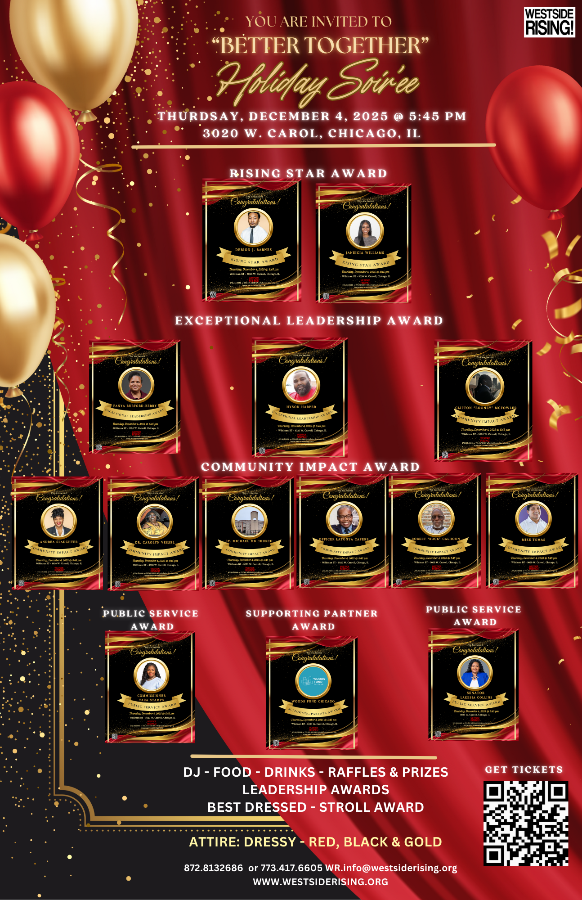
Public Service Award
Honoring dedicated individuals who have demonstrated outstanding commitment to public service
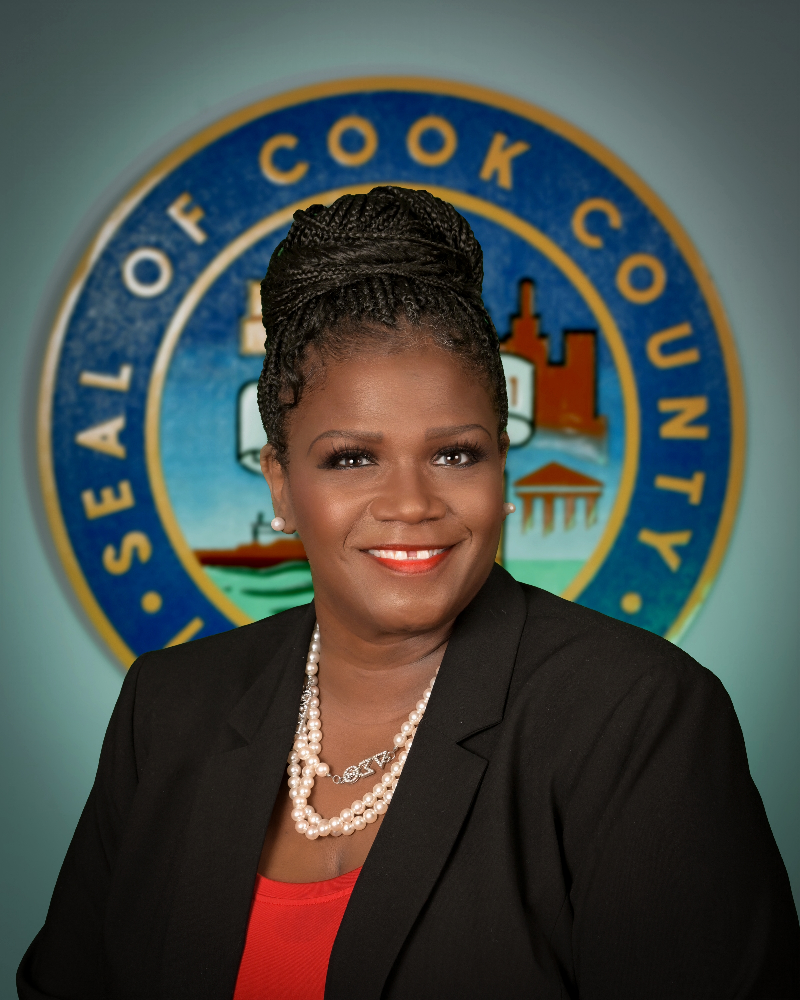
Tara Stamps
Public Service AwardBorn to civil rights icon Marion Stamps in Cabrini-Green in 1969, Cook County Commissioner Tara Stamps has devoted her life to organizing working people to transform communities into places of belonging, equity, and justice. A proud Central State University alum, she earned two master's degrees in education and has 25 years of teaching experience at schools including Leslie Lewis Elementary and Jenner Academy in Cabrini-Green. As an activist and Chicago Teachers Union member, Commissioner Stamps organized against school closures, privatization of city services, and police militarization in Black and Brown communities. Representing the 1st District, she champions access to affordable healthcare through County Care expansion, higher wages through economic development, restorative justice approaches to public safety, equal opportunity to public services in every zip code, and giving working people a voice in County government. Commissioner Stamps invites all residents to engage in the political process and mobilize for a better 1st District.
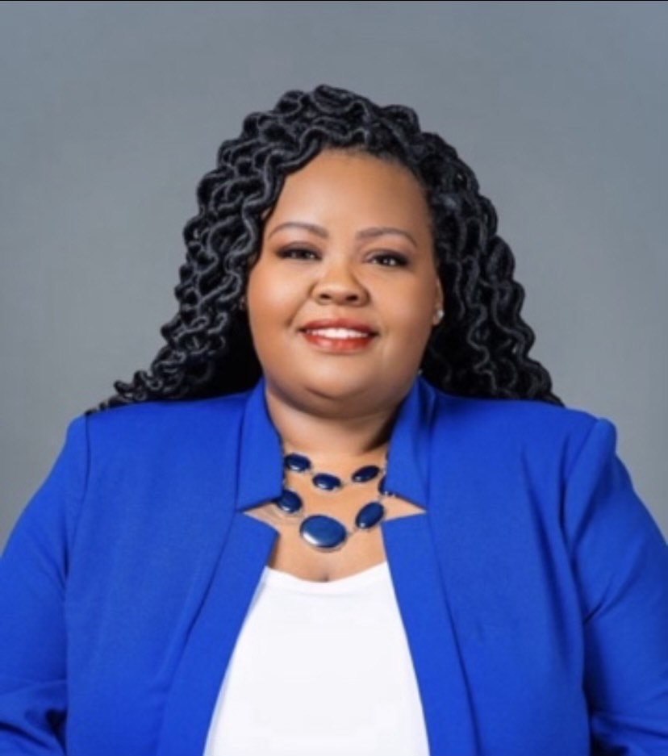
Lakesia Collins
Public Service AwardSenator Collins is a dedicated public servant, Chicago native, mother of three, and former nursing home worker who served as a spokesperson for the "Fight for $15" campaign as a rank and file member of SEIU Healthcare IL, advocating for healthcare workers. A strong advocate for seniors, working-class families, youth in care, education, public safety, affordable housing, and mental health, she previously represented the 9th House District and has successfully passed several bills, including measures to restore childcare, provide free dental care for low-income families and veterans, protect reproductive rights, and reform the Department of Children and Family Services (DCFS). She currently serves on key committees including Appropriations-Education, Appropriations-Health and Human Services, Behavioral and Mental Health, Child Welfare, Consumer Protection, Criminal Law, and Human Rights. Senator Collins has held significant leadership roles, including serving as Chair of the Illinois House Black Caucus and currently serving as Joint Chair of the Illinois Legislative Black Caucus, earning her numerous accolades for her contributions to the community.
Rising Star Award
Recognizing emerging leaders who show exceptional promise and dedication to community service
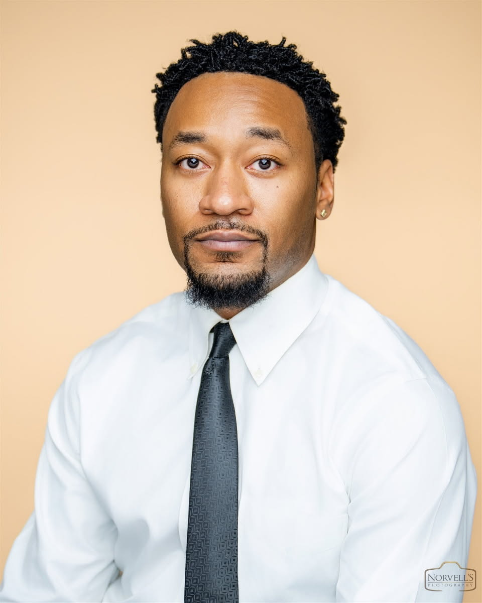
DERION J BARNES
Rising Star AwardDERION J BARNES is a black culture wellness advocate dedicated to improving the quality of life in Chicago's most impoverished neighborhoods by any means. Born and raised on the Westside of Chicago, Derion saw firsthand the disinvestment in his Garfield Park community but also saw the potential for growth and development. As a community leader, Derion has facilitated local food drives to combat the lack of grocery stores and provide healthier food options for residents, assisted with back-to-school fundraisers for CPS students, and mentored youth by introducing holistic health practices like yoga and meditation as methods for gun violence prevention. With new projects, programs, and businesses starting to emerge west, Derion has positioned himself to engage with community to inform and reassure that changes are being made for us and by us.

Janeicia Williams
Rising Star AwardJaneicia Williams is a lifelong community advocate from Chicago's West Side, committed to social justice, youth leadership, and collaborative community building. A former President of the Chicago Westside NAACP Youth Council, she began her work organizing civic engagement and "Know Your Rights" initiatives. She later earned a bachelor's in Legal Communications from Howard University and a master's in Experience Design from DePaul. As Community Ecosystem Director at Project Exploration, she leads My CHI My Future in Austin, strengthening partnerships and youth opportunities. Janeicia also serves as Principal Consultant for Nvision Urban Solutions, designing community-informed programs that empower residents and drive sustainable neighborhood change.
Exceptional Leadership Award
Honoring leaders who demonstrate outstanding vision, innovation, and impact in community development
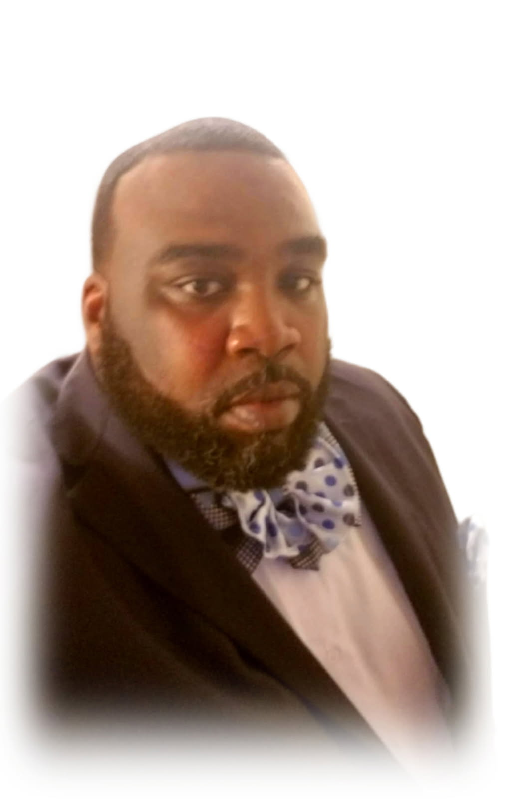
Hyson Harper
Exceptional Leadership AwardHyson Harper is a Chicago native and CEO and Founder of Anchor Chicago Organization. After overcoming a challenging youth, Harper transformed himself into a recognized community leader actively engaging in numerous efforts including the Hattie & Mattie Scholarship, Street Cafe, and Peace March for Change. An avid supporter of minority male life improvement and family causes, he partners with community organizations to bring resources and life-altering opportunities to individuals and families across Chicago.

Rev. Fanya Burford-Berry
Exceptional Leadership AwardRev. Fanya Burford-Berry has led the West Side Heroin/Opioid Task Force since September 2023 and lives in Austin with her husband Kendric Berry. Previously a volunteer and outreach worker, she brings lived experience in alcohol recovery to her leadership role. As an ordained ELCA minister, she emphasizes human connection, local strategies, and harm reduction to support those affected by substance use disorders. Her leadership focuses on dignity, resource access, and community empowerment.
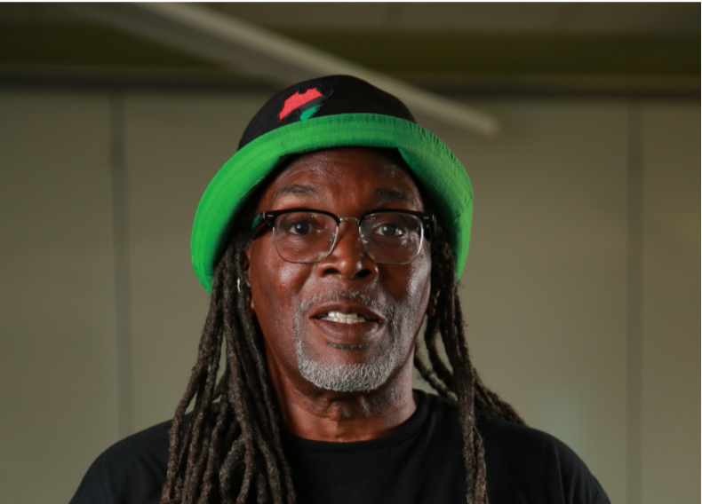
Clifton Bonney McFowler
Exceptional Leadership AwardClifton Bonney McFowler's journey exemplifies redemption and community leadership. After serving 28 years in prison—including five in solitary confinement—he returned home in 2012 dedicated to rebuilding the same communities he once ran in. Through his work with BUILD, Mr. Bonney provides resources, advocacy, education, and job placement for underserved and system-impacted residents while leading reentry circles that help returning residents rebuild their lives with dignity.
Community Impact Award
Celebrating individuals whose work has created measurable, lasting positive change in our communities
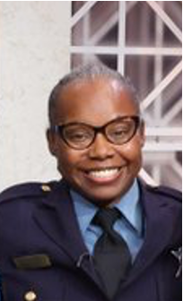
Officer LaTonya Capers
Community Impact AwardOfficer LaTonya Capers of the 11th District, referred to as the angel of the West Side, is a Chicago Police Officer who exemplifies service and dedication to her community. Recognized as WGN Spotlight Chicago's First Responder of the Month in June 2025, Officer Capers goes above and beyond the call of duty in serving residents of Chicago's West Side. She has received the Prestige of Achievement Award for her exceptional work with senior citizens and earned a $1,000 donation in her name to the 100 Club of Illinois from the Mancini Law Group. Officer Capers' commitment to community policing and compassionate service has made her a beloved figure among West Side residents.
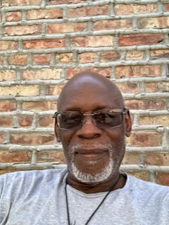
Robert "Rock" Calhoun
Community Impact AwardRobert J. "Rock" Calhoun was born in North Lawndale, just steps from his community center. Rock became involved in street life and eventually was sent to prison, which he now describes as rescue, rather than punishment. In 2013, Rock and over thirty other men began Men Making a Difference (MMAD) to address hopelessness in North Lawndale. Rock prizes Restorative Justice practices to foster communication and build community. MMAD continues its free summer camp and hosts hundreds at free weekly breakfasts. Rock is always open to new ideas and new partners but his top priority remains the people of the neighbourhood.
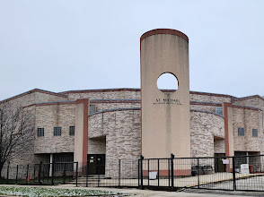
St. Michael Missionary Baptist Church
Community Impact AwardFounded in 1934, St. Michael Missionary Baptist Church is a pillar of faith, hope, and transformation in Chicago's West Garfield Park community. Under the pastoral leadership of Reverend Paul C. Sims, the church empowers individuals to reach their God-given purpose, rebuild families, and uplift the community through worship, education, outreach, and economic empowerment. Guided by its mission "to empower men and women to move beyond the impossible..." St. Michael continues to lead with compassion, service, and the life-transforming power of the Gospel of Jesus Christ across Chicago's West Side.
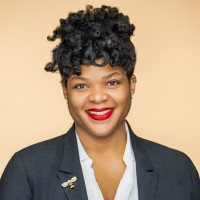
Andrea "Drea" Slaughter
Community Impact AwardDrea Slaughter is the Executive Director of the Garfield Park Rite to Wellness Collaborative and former Community Engagement Manager for the Garfield Park Conservatory Alliance, where she leads initiatives to improve community health and ensure accessibility for longtime Black and Brown neighbors. A Westside native from Garfield Park and Humboldt Park, Drea creates advisory councils of Westsiders and pushes for programming that radically invites neighbors who were historically left out. She also owns All Things Beetiful, a small business selling brooches and customizable gifts as an ode to her grandmother, while ensuring the community's magic, intelligence, and vibrancy are celebrated for future generations.
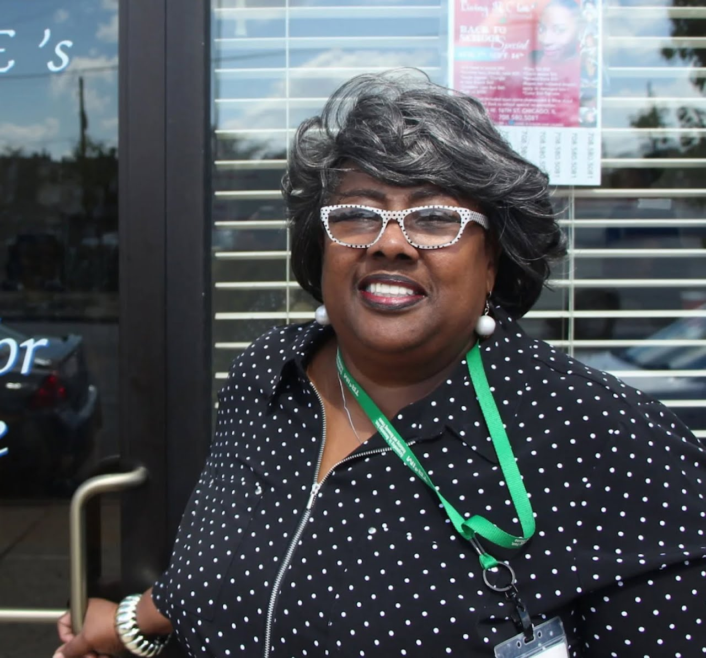
Apostle Dr. Carolyn L. Vessel
Community Impact AwardApostle Dr. Carolyn L. Vessel is the Founder and Pastor of Way of Life Church International, a twenty-eight-year-old congregation on Chicago's West Side. She is the founder of Co-Labourers With Christ Ministry, a forty-year-old interdenominational ministry dedicated to evangelizing, uniting the Body of Christ, and building healthy families. Apostle Vessel also founded Family Academy (FAM-A), a human service organization providing parenting education, violence prevention training, and community mentoring to help families navigate successfully through life.
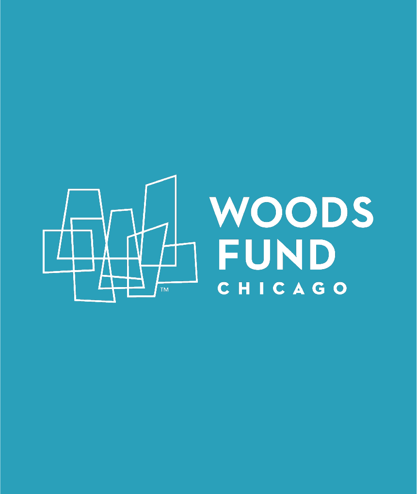
Woods Fund
Community Impact AwardWoods Fund Chicago is a grantmaking foundation committed to social, economic, and racial justice through community organizing and public policy advocacy. The foundation empowers people most impacted by structural racism and economic injustice to lead the process of defining problems and developing solutions. Centering BIPOC voices and leadership, Woods Fund Chicago works to disrupt white supremacy culture, confront power, redistribute resources, and create systemic transformation for lasting change across all communities.
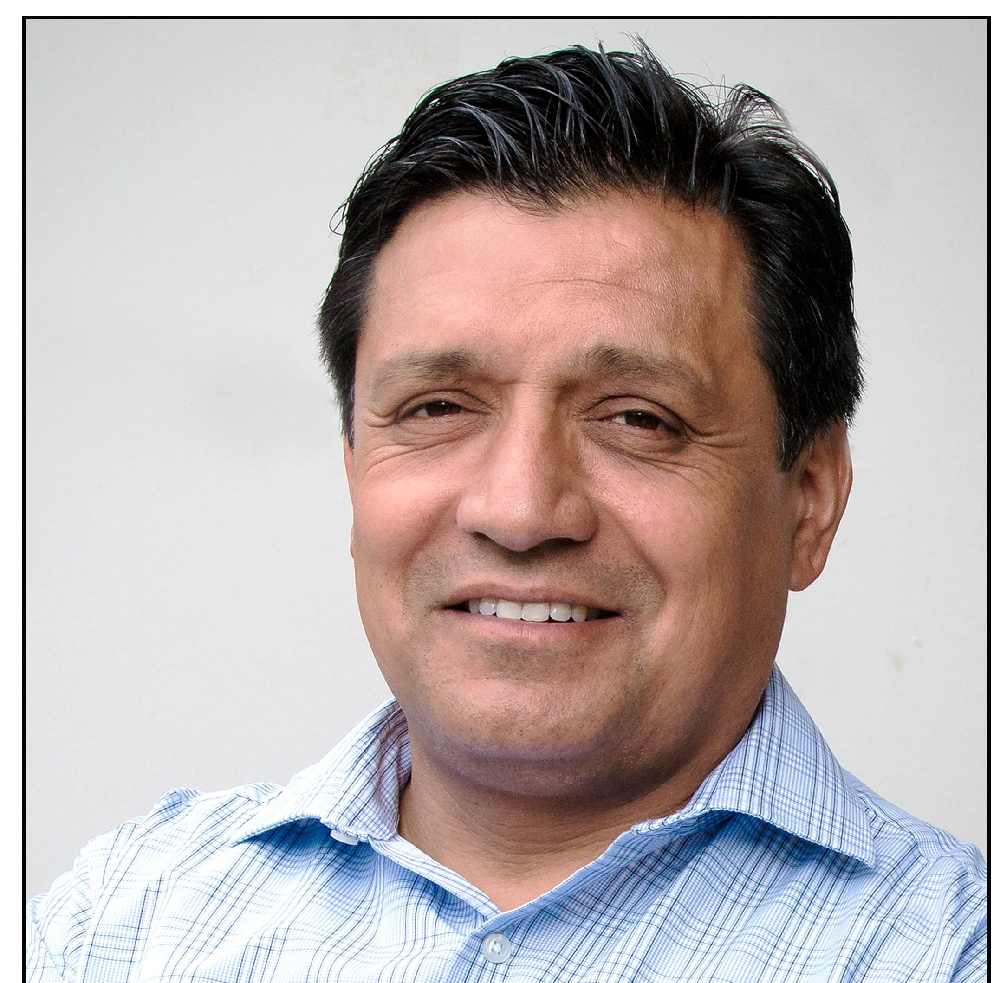
Mike Tomas
Community Impact AwardMike Tomas is the founding Executive Director of the Garfield Park Community Council, which he joined in 2005 when it was created as part of the LISC New Communities Program through the Garfield Park Conservatory Alliance. With more than 15 years of experience in community organizing and community development work on both Chicago's West Side and the southeast side of San Francisco, Mike works closely with residents, government agencies, and community organizations to improve the quality of life for those in economically distressed neighborhoods.